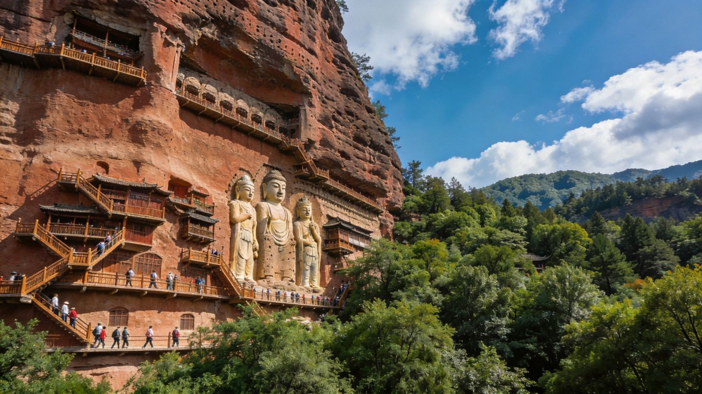
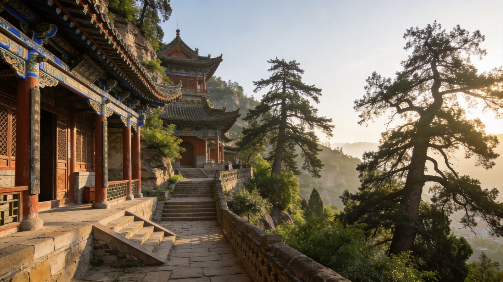
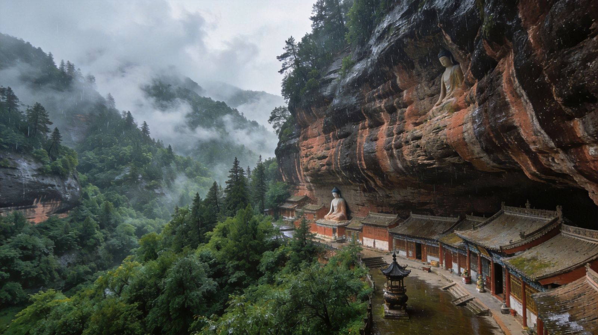
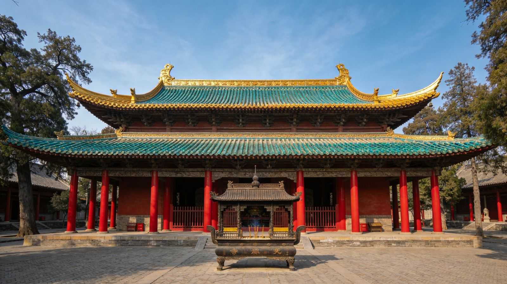
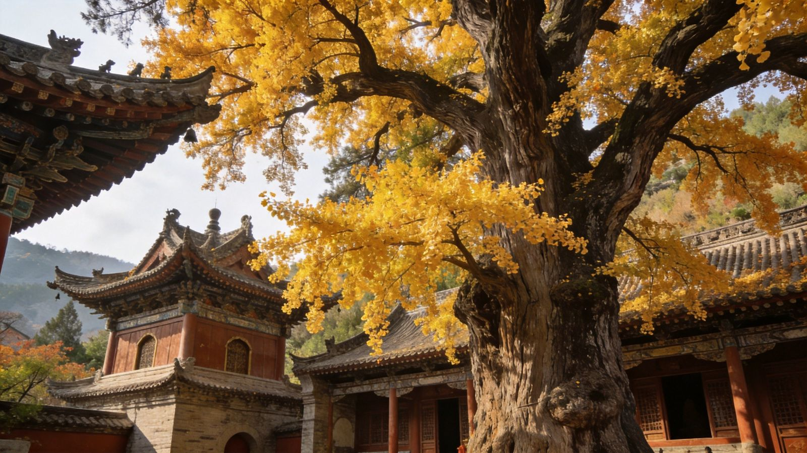
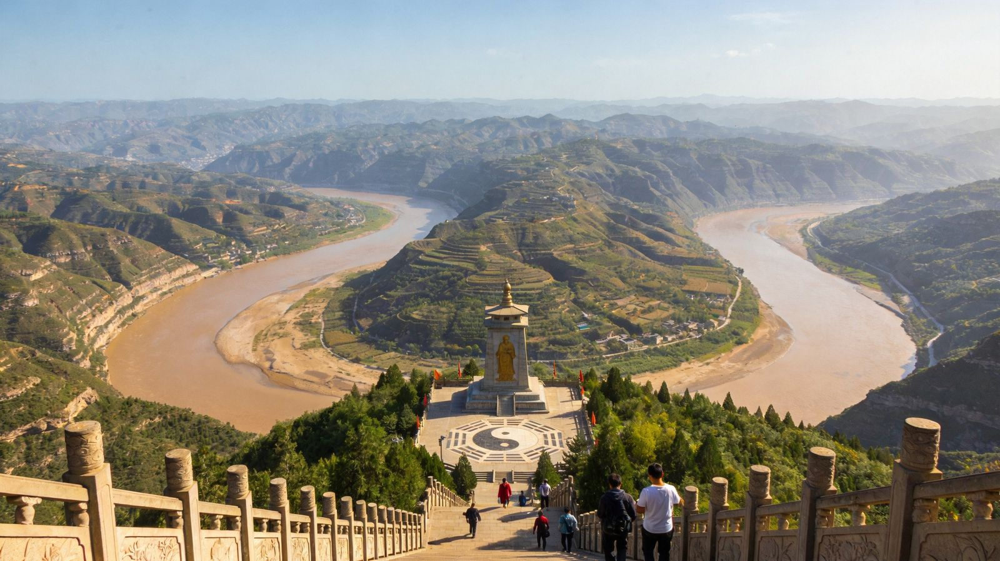

封面
总览
行前·交通·住
Day1 麦积山
Day1 仙人崖
Day2 伏羲庙
城区·南郭寺·玉泉观
大地湾·卦台山
美食
组合·贴士
安全

陇上江南 · 伏羲故里
天水
麦积山 · 伏羲庙 · 仙人崖
石窟
人文
山水
伏羲
美食
甘肃 · 天水
A5 口袋手册
· 深度漫游
1
/ 11
天水
动线总览
2–3 天怎么玩
Route Overview
1天
上
麦积山 · 东方雕塑馆
凌空栈道＋石窟群＋摩崖大佛，泥塑艺术的巅峰
1天
下
仙人崖
麦积山山下的丹霞清幽山景，古寺溪谷很上镜
2天
上午
伏羲庙 → 卦台山
人文始祖祭祀圣地，可加游伏羲画卦的卦台山
2天
顺访
南郭寺 · 玉泉观 · 古城
古柏古刹、依山道观、古城夜市，市区轻松收尾
可+1天
大地湾遗址
中国最早彩陶与原始宫殿，考古迷必去（秦安）
TIP
天水是
陇上江南、伏羲故里
，山清水秀、美食出圈，却很低调，性价比极高。
TIP
🎫 麦积山石窟约 90 元、仙人崖约 40 元、伏羲庙约 20 元、南郭寺约 20 元；以景区当日公示为准。
2
/ 11
天水
行前准备
怎么去 · 住哪 · 带什么
Before You Go
🚄 怎么去
高铁：天水南站
，西安约 1.5–2 小时、兰州约 1.5 小时可达，最方便
普速：天水站
（陇海线老站，离市区更近，班次多）
飞机
：天水麦积山机场航班少，常走兰州中川/西安咸阳机场转高铁
🏨 住哪
秦州区（市区）
：看伏羲庙、古城、南郭寺方便，首推
麦积区
：离麦积山、仙人崖更近，赶一日游可选
🎒 必带
麦积山凌空栈道登高，穿
舒适防滑鞋
石窟塑像精美、栈道排队，
预留充足时间、避开周末
陇上多雨湿润，
备薄外套＋雨具
；春秋最佳、9–10 月秋色很美

玉泉观 · 依山而建的古道观
3
/ 11
天水
悬崖佛阁 · 泥塑圣境
Day1 · 上午
悬崖佛阁 · 泥塑圣境
市区
→
麦积山
→
凌空栈道
→
东崖·西崖石窟
麦积山 · 东方雕塑馆
中国四大石窟之一
🎨 看点
东崖第 4 窟·上七佛阁
：最大殿堂式洞窟，华丽肃穆
西崖第 44 窟
：有“东方蒙娜丽莎”美誉，微笑观音最传神
第 133 窟·万佛堂
：千佛各态、泥塑之最，一定别错过
岩壁中段那组
巨型露天摩崖造像
，正面远看最壮观
🗺 玩法
乘
景交车（往返约 15 元）
到瑞应寺，再步行登
凌空栈道
栈道狭窄单向、人多需排队，
建议一早到
，人少体验更佳
全程约
2–3 小时
，登高俯瞰群山的视野是最大彩蛋
TIP
🎫 门票约 90 元；恐高者栈道部分放慢脚步，穿防滑鞋、勿翻护栏。
4
/ 11
天水
丹霞清幽 · 崖下古寺
Day1 · 午后
丹霞清幽 · 崖下古寺
仙人崖
→
崖下古寺
→
溪谷 · 山景

仙人崖 · 麦积山下的清幽山色
丹霞岩壁 × 翠谷古寺
🌿 看点与玩法
与麦积山属同一景区群，
同线游览
顺路
丹霞岩壁下藏着
古寺殿宇
，可先看崖下塑像再上山
溪谷、小桥、山径
很上镜，拍“清幽山色”特别出片
雨后林间薄雾弥漫，意境最棒，时间充裕可走慢一点
TIP
🎫 门票约 40 元；与麦积山安排在同一天最省行程，当天往返市区很方便。
5
/ 11
天水
人文始祖 · 祭祀圣地
Day2 · 上午
人文始祖 · 祭祀圣地
伏羲庙
→
先天殿
→
古柏庭院

伏羲庙 · 人文始祖祭祀圣地
明代重檐歇山 · 一画开天
🏛 看点
先天殿（正殿）
：明建重檐歇山顶、青绿琉璃瓦，匾额“開天明道”“與天地準”
檐下楹联、斗拱彩绘、
龙纹石雕基座
，古建工艺极精
庭中
千年侧柏
苍劲如龙，与古庙相衬很出片
国内现存
最早、规制最高的伏羲庙
，每年 6 月公祭伏羲大典在此
🗺 玩法
市区
步行即达
，走中轴先天殿→太极殿→东西配殿
伏羲庙在
秦州老城
，出来后顺逛老街、找小吃
约
1–1.5 小时
足够，细细看匾额楹联更有味道
TIP
🎫 门票约 20 元；把伏羲庙排在返程前很方便，逛完顺路去古城觅食。
6
/ 11
天水
古刹古柏 · 陇上城景
Day2 · 顺访
古刹古柏 · 陇上城景
天水古城 · 西关老街夜景
青瓦灯带 · 烟火气息
市区必逛 · 亮点

南郭寺 · 陇右第一名刹
春秋古柏＋隋塔，杜甫曾居留写诗；门票约 20 元
古刹清幽
玉泉观 · 依山道观
元明清道观群、三清殿、古柏石阶，登高瞰城
登高瞰城
老城街巷
伏羲庙周边老街与夜市，晚上觅食最热闹
烟火慢逛
TIP
南郭寺在城南山上，玉泉观在城北，一南一北各半天足够；休闲玩可只看市区、留时间吃小吃。
7
/ 11
天水
加长线 · 彩陶之源
可 + 1 天
卦台山 · 大地湾彩陶之源
卦台山
→
（秦安）大地湾遗址

卦台山 · 伏羲画卦之地
登顶俯瞰渭河
🔢 卦台山
传说
伏羲登此观天象、画八卦
，是八卦文化源头
山顶开阔，
俯瞰渭河在苍莽山间蜿蜒
，视野大气
距市区约 20 公里，半天可往返，免费景点
🏺 大地湾遗址（秦安）
中国新石器时代圣地
，距今约 8000–5000 年
出土
中国最早的彩陶
、最古老的“地面画”与原始宫殿 F901
距秦安县城近，
考古/历史迷强烈推荐
，往返约一天
TIP
脚程紧：卦台山半天；愿意多走：卦台山＋大地湾串成一天，追“华夏文明之源”。
8
/ 11
天水
美食清单
天水味道 · 酸辣醇香
Eat · Local
天水呱呱 · 必吃王牌
荞麦凉粉 酸辣劲道
🥟
天水呱呱
荞麦蒸凉粉切块，浇红油辣椒、蒜汁香醋，酸辣上头、必点
🍜
浆水面
酸浆汤手擀面配韭菜，清淡爽口，解腻神器
🌶
天水麻辣烫
近年出圈的“甘肃天水麻辣烫”，油润香辣、走红全网
🥘
天水暖锅
铜锅大烩菜热气腾腾，冬日最暖胃
🍎
花牛苹果
天水产国家地理标志苹果，红艳脆甜、可作手信
TIP
早餐来一碗呱呱＋一碗凉皮最地道；夜市（古城周边）夜宵选择最多。
9
/ 11
天水
组合玩法 · 出行贴士
怎么串成 一条线
Route & Tips
天水经典走法：
🗓 经典 2 天
D1 麦积山＋仙人崖；D2 伏羲庙＋南郭寺/玉泉观＋古城夜
人文山水兼得
🗓 加长 3 天
第 3 天卦台山＋大地湾，追伏羲与彩陶之源
深度考古
🚌 交通
市区公交/打车方便，麦积山有景区专线；距市区约 30 公里
约 1 小时车程
🧭 串线建议
适合西安/兰州中转顺游，也常与莫高窟方向连成甘肃人文线
顺路便利
TIP
麦积山石窟建议安排
整个上午
，栈道登高、泥塑细赏，人少时体验最舒服。
10
/ 11
天水
安全提示
看清这些，玩得更安心
Stay Safe
⛰
石窟栈道
麦积山悬崖栈道单向、狭窄，人多排队勿挤，防滑慢行
☔
气候
陇上多雨湿润，山路湿滑，备伞防滑、注意保暖
🥾
登山
卦台山、玉泉观都需爬坡，穿舒适鞋、勿攀爬护栏
🥗
饮食
特色小吃多酸辣重味，肠胃弱者适度，多喝热水
🎫
票价
各景点门票、景交以景区当日公示为准，旺季提前排队
天水人文之旅「WorldStip」祝你玩得开心 🏯
11
/ 11
WorldStip · 天水 / 麦积山 / 伏羲庙 / 仙人崖 / 南郭寺 · 数据以景区当日公示为准
Insta360
记录美好
记录美好生活
相机指南 · CAMERA GUIDE